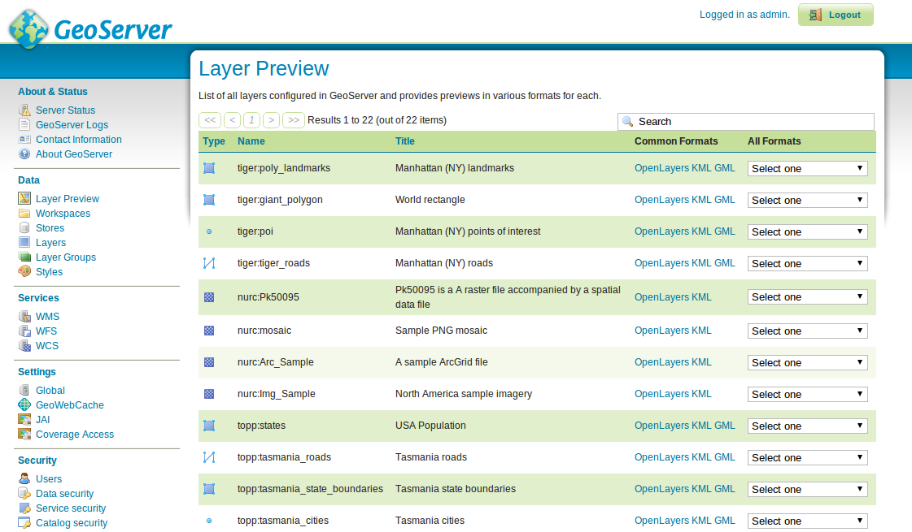

Guida rapida GeoServer¶
GeoServer è un’applicazione java per fornire mappe (e dati) per creare altri client (come i browser web). GeoServer viene fornito con un’interfaccia di gestione basata su browser e si connette a più origini dati nel back-end.
Questa Guida Rapida descrive come:
aggiungere un’origine dei dati vettoriale e raster a GeoServer
seleziona il colore alle feature delle mappa utilizzando lo stile
prova i layer in una semplice mappa web
impara sui client che possono visualizzare le tue mappe
aggiungi un layer da un file NetCDF
Contenuti
Avvia Geoserver¶
Dal menu Start, selezionare . L’applicazione impiegherà alcuni istanti per avviarsi e aprirà una pagina web a http://localhost:8082/geoserver/web

Accedi utilizzando il nome utente admin e la password geoserver. Ora vedrai la pagina admin.

Seleziona il collegamento Anteprima livello nella parte superiore della sezione Dati nel menu a sinistra per visualizzare un’anteprima dei layer caricati sul server.
Scorri fino in fondo alla pagina e fai clic sul link OpenLayers nella riga tiger-ny. Si aprirà una nuova finestra con un’anteprima di alcuni dei dati di esempio.

Puoi ingrandire la mappa in tre modi:
{kind=link}
facendo clic sulla barra dello zoom a sinistra, maggiori clic farai su di essa più ingrandita si vedrà.
utilizzando la rotellina di scorrimento del mouse (se ne hai una), lo scorrimento verso l’alto ingrandirà e ridurrà lo zoom.
trascinando una casella sulla mappa tenendo premuto il tasto :kbd:”shift key” - questo ingrandirà la casella selezionata (o il più vicino possibile allo schermo).
Sperimenta con questa vista e guarda alcune delle altre anteprime. Una volta che ti senti a tuo agio nel visualizzare i dati esistenti, puoi passare all’aggiunta di alcuni nuovi dati.
Caricamento dei dati¶
Nota
Non sarà possibile eseguire i seguenti passaggi se si esegue con un file system di sola lettura (ad esempio il DVD). Sarà necessario eseguire in una macchina virtuale, o da una USB, o installare OSGeoLive (o solo GeoServer) sul disco rigido.
In questo esempio useremo il daset Natural Earth incluso in OSGeoLive (/usr/local/share/data/natural_earth2/).
Dobbiamo creare un Archivio per i nostri dati. Dal pagina admin IGSI vai a :guilabel:”Stores”.
Clicca su :guilabel:”Aggiungi nuovo Archivio”. Vedrai questa pagina:

Selezionare :guilabel:”Cartella dei file spaziali”. Vedrai quanto segue:

Digita un nome per il Data Store (per esempio, Natural Earth) e inserisci l’URL del set di dati - in questo caso
/usr/local/share/data/natural_earth2/. Puoi usare il pulsante sfoglia per trovare la directory se i tuoi dati sono da qualche altra parte.Premi salva.

Premi publish accanto a uno dei layer per finire di aggiungere i dati. Questo ti porterà alla pagina Layers:

Scorrendo la pagina vedrai che GeoServer ha compilato molti dei campi per te. Quando arrivi a Coordinate Reference System noterai che sotto Native SRS c’è scritto UNKNOWN dovrai compilare la prossima casella (declared SRS) per assicurarti che GeoServer sappia dove sono i dati.
Puoi digitare epsg:4326 nella casella, o andare su http://prj2epsg.org/search e incollare la stringa che vedi se clicchi sul link accanto a «UNKNOWN».
Clicca su Compute from data e Compute from native bounds per riempire i Bounding Boxes.
Infine premi save e hai pubblicato il tuo primo layer.
Nota
Non preoccuparti se l’anteprima del layer non ha un bell’aspetto perché sta usando lo stile predefinito. Nella prossima sezione vedrai come produrre uno stile più carino.
Puoi seguire lo stesso passo con gli altri layer nella directory usando il pulsante Add a new resource nella pagina dei layer. Basta selezionare il negozio di terra naturale dalla casella a discesa per tornare alla pagina del negozio.
Stilizzazione dei dati¶
Lo styling di un set di dati in un layer di mappa GeoServer usa uno standard OGC chiamato Styled Layer Descriptor (SLD). Questi sono rappresentati come file XML che descrivono le regole che sono usate per applicare vari simbolizzatori ai dati.
Per iniziare, dai uno stile ai dataset Terra e Oceano. Puoi creare i file SLD usando un semplice editor di testo, ma a volte un editor grafico è meglio. Ci sono diverse opzioni, ma uDig permette di aprire direttamente gli shapefile e applicare semplici stili usando una GUI. Fornisce anche un semplice editor per modificare l’XML se necessario.
Uso di uDig per creare stili semplici¶
Nota
Per maggiori dettagli su come usare uDig vedi il uDig Quickstart.
Apri uDig e aggiungi gli shapefile (usando il pulsante add data in alto a sinistra).
Trascina le tabelle ne_10m_land e ne_10m_ocean nella finestra della mappa. uDig applica automaticamente uno stile (in modo da poter vedere i dati).

Nel Layer list seleziona il pulsante dello stile (assomiglia alla tavolozza di un artista).

Questo aprirà il Style Pane.
Nella finestra semplice puoi facilmente selezionare un bel blu per gli oceani cliccando sulla casella colorata nella scheda di riempimento e scegliendo dal selezionatore di colori che produce. Puoi anche aumentare l’opacità del riempimento al 100% per far apparire meglio il colore. Scegli lo stesso blu per il colore del bordo in modo che corrisponda.

Clicca su
OKe uDig visualizzerà le modifiche.
Ripeti i passi precedenti per cambiare il colore del layer del terreno. Puoi usare la sezione
define custom colorsper creare il tuo colore preferito.
Questo dà una mappa del mondo di base dall’aspetto gradevole.

Aggiungi lo stile a GeoServer¶
Ora hai bisogno di trasferire questi stili a GeoServer.
Nella finestra dello stile c’è un pulsante di esportazione che ti permette di salvare il file SLD che definisce il tuo stile.
Una volta salvato, puoi andare di nuovo nella pagina di amministrazione di GeoServer e selezionare
Styles(in fondo alla sezioneData).Seleziona il link
Add New Style. In fondo alla pagina c’è una casella per il caricamento dei file e un pulsante di navigazione.Clicca su browse per trovare i file appena salvati.
Clicca sul link di upload (accanto al pulsante browse) e una copia del file appare nell’editor.
Se clicchi sul pulsante di convalida, le linee evidenziate ti daranno un errore, ma puoi tranquillamente ignorare l’errore (o cancellare quelle linee perché non fanno nulla).
Premi Sottoponi al fondo della pagina..

Aggiungere lo stile al layer¶
Clicca sul link Layers nel menu a sinistra della finestra GeoServer.
Clicca sul layer (per esempio ne_10m_land), poi seleziona la scheda Publishing.
Cambia la casella Default Style con il nome dello stile che hai caricato nella sezione precedente.
Ora fai clic su Save e vai alla pagina di Anteprima del layer per controllare che sia venuto bene.
Nota
Ci sono file di stile di esempio per tutti i layer di esempio di Natural Earth in /usr/local/share/geoserver.
Client per layer WMS¶
I layer di Web Map Service (WMS) che stai servendo da GeoServer possono essere utilizzati con una varietà di client su questa distribuzione OSGeoLive, tra cui:
Aggiungi un layer da un file NetCDF¶
Il plugin GeoServer NetCDF permette la pubblicazione di raster da file NetCDF.
Configura un negozio NetCDF¶
Dopo lanciare «Avvia GeoServer»
Accedi come amministratore.
Clicca su Add stores poi NetCDF.
Inserisci un valore per Data Source Name (questo esempio usa «netcdf») e un URL NetCDF. Puoi usare questo file di esempio:
file:///usr/local/share/data/netcdf/polyphemus_20120401.nc
Premi «Salva», «Pubblica» il layer «O3».
Scorri fino alla fine della scheda «Data» e premi nuovamente «Save».

Anteprima del layer NetCDF¶
Seleziona «Anteprima Layer» dal menu a sinistra
Scorri verso il basso per trovare la voce «cite:O3» e clicca sul link «OpenLayers» per mostrare un’anteprima del layer.
Cliccando sui punti, il valore di «Ozone_concentration» sarà mostrato in una tabella nella parte inferiore della mappa.

Nota
Questa istanza di GeoServer è stata configurata con la proprietà di sistema Java NETCDF_DATA_DIR per consentire la pubblicazione di file NetCDF in directory di sola lettura.
E ora?¶
Questo è solo il primo passo sulla strada per usare GeoServer. Ci sono molte altre funzionalità che puoi provare.
Home del progetto GeoServer - https://geoserver.org/
Manuale utente di GeoServer - https://docs.geoserver.org/latest/en/user/
GeoServer Tutorial - https://docs.geoserver.org/latest/en/user/tutorials/index.html
GeoServer Styling Workshop - https://docs.geoserver.org/latest/en/user/styling/workshop/index.html